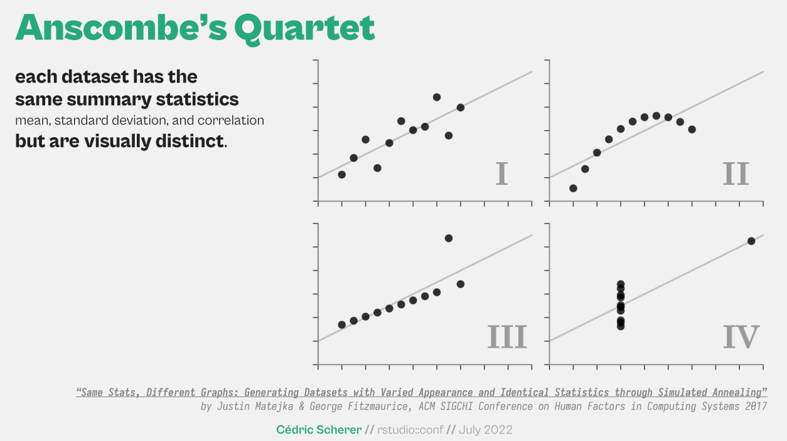

Why data visualisation matters
Data visualisation plays a critical role for data analysis in two primary ways:
It is a key aspect of understanding the data.
Visualisations can be used to communicate observations and insights from data in a more impactful way.
However, creating an effective data visualisation requires practice and experience. At times, data analysts are so familiar with their data that they unintentionally overlook the importance of presenting it in a clear and coherent manner. This can lead to confusing or overwhelming visualisations for others who are not as familiar with the data.
Always plot the data
Visualising data is a crucial step in exploring and analyzing it. Although calculating summary statistics for each variable in a dataset is a good starting point, it is often insufficient. This is because different datasets can produce similar or even identical summary statistics. Anscombe’s quartet is a powerful demonstration of this, as shown in the screenshot below.

Identifying observations and insights
Data visualisations are typically created for publication when there are relevant observations or insights to communicate. Engaging with domain and business experts is crucial during this stage, as it provides context that is essential for deriving insights from the analysis.
It is also beneficial to closely collaborate with domain experts when prototyping visualisations. Their feedback is invaluable in refining the message and mapping it into visual form.
Something to also consider is that annotations have become a commonplace addition to data visualisations as they provide readers with the contextual information they require to accurately interpret the message.
Selecting the chart type
When considering the visual form, it is crucial to select a chart type that suits the data and the intended message. There are numerous resources available to assist with this step, and some of the ones I use are included in the reference section below.
The visualisation should emphasise what is important and enable the observer to understand the point with minimal mental effort. As mentioned earlier, annotations can be included to highlight critical information.
About the tools
In terms of tools, I strongly advocate for using the R programming language due to its exceptional visualisation packages, which enable us to create high-quality static and interactive visualisations that are reproducible. However, I would not discourage the use of other preferred tools, as exceptional visualisations have also been created using Power BI, Tableau, and Excel.
In summary
In conclusion, to improve your data visualisation skills, I encourage you to consider the following:
Collaborate closely with domain experts to extract meaningful insights from your analysis and craft a message to convey visually. This is the most critical step, in my opinion.
Keep in mind that what may seem obvious to you may not be so for others.
Select a chart type that is appropriate for your data and emphasises the intended message. Utilise annotations to provide additional context that readers may need to understand the message.
Develop a deep understanding of a visualisation tool and practice using it extensively. For example, you could try to replicate well-designed visualizations to refine your skills.
Let’s chat!
I have a strong passion for this subject and would be delighted to chat if you have any questions. Please feel free to reach out to me via LinkedIn.